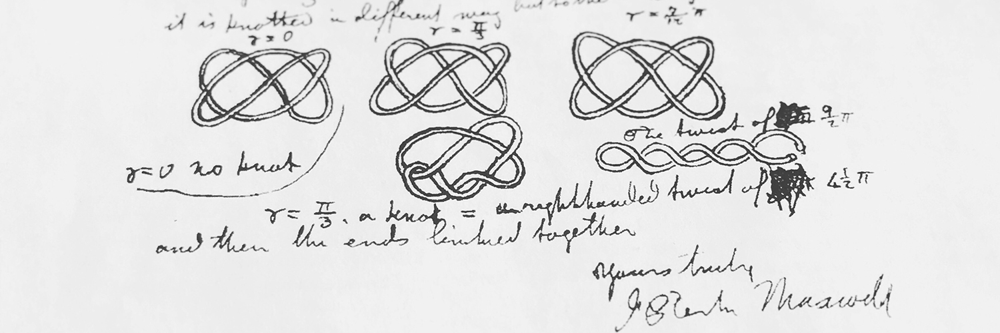

研究
系統發生學
如何紀錄以及表示生物演化？ 病原體的演化有什麼樣的模式和規律？ 什麼樣的數學模型可以模擬出這些模式和規律？ 如何預測病原體的演化？ 對病原體演化的研究能夠怎樣幫助解決公共衛生以及醫學領域的問題？
論文及預印
Analyzing phylogenetic trees with a tree lattice coordinate system and a graph polynomial
Pengyu Liu, Priscila Biller, Matthew Gould and Caroline Colijn
Systematic Biology, 2022
Comparing the topology of phylogenetic network generators
Remie Janssen and Pengyu Liu
Journal of Bioinformatics and Computational Biology, 2021
A tree distinguishing polynomial
Pengyu Liu
Discrete Applied Mathematics, 2021
The impact of sampling bias on viral phylogeographic reconstruction
Pengyu Liu, Yexuan Song, Caroline Colijn and Ailene MacPherson
Preprint, 2022
受邀會議報告
- Comparing the topology of phylogenetic network generators
RECOMB – Comparative Genomics, Online
September 2021 - A tree distinguishing polynomial - an introduction to polynomial tree metrics
SMB Annual Meeting, Université de Montréal, Montréal, QC
July 2019 - A tree distinguishing polynomial - an introduction to polynomial tree metrics
CAIMS Annual Meeting, Whistler, BC
June 2019 - A tree distinguishing polynomial - an introduction to polynomial tree metrics
CanaDAM 2019, Simon Fraser University, Vancouver, BC
May 2019
傳染病學
傳染病的傳播有什麼樣的模式和規律？ 人類的行為與傳染病不規律的傳播與分佈有什麼樣的聯繫？ 病原體的基因組數據能夠怎樣幫助分析和預測傳染病的傳播？
論文及預印
Modelling the impact of household size distribution on the transmission dynamics of COVID-19
Pengyu Liu, Lisa McQuarrie, Yexuan Song and Caroline Colijn
Journal of the Royal Society Interface, 2021
From description to prediction: modelling in the genomic era
Jessica Stockdale, Pengyu Liu, and Caroline Colijn
Preprint, 2022
媒體報導
- Crowded households and COVID-19
CBC Radio - On The Coast with Gloria Macarenko
April 2021 - A COVID culprit: crowded households. And more news from science journals
The Tyee
April 2021 - Her husband got COVID-19. She’s suing his employer
Bloomberg Opinion
February 2021 - The impact of household size on the transmission of COVID-19 in Vancouver
Gloabal News (BC) Television Interview
February 2021
拓撲學
拓撲是什麼？ 拓撲的概念是否可以用於幾何之外的領域？ 紐結是什麼？ 如何高效率計算紐結的不變量？ 能否找到更多容易計算的紐結不變量？
論文及預印
A diagrammatic approach for determining the braid index of alternating links
Yuanan Diao, Claus Ernst and Gábor Hetyei and Pengyu Liu
Journal of Knot Theory and Its Ramifications, 2021
The braid index of reduced alternating links
Yuanan Diao, Gábor Hetyei and Pengyu Liu
Mathematical Proceedings of the Cambridge Philosophical Society, 2020
The HOMFLY polynomial of links in closed braid form
Pengyu Liu, Yuanan Diao and Gábor Hetyei
Discrete Mathematics, 2019
Difference of sequence topologies
Pengyu Liu and Jingzhou Na
Preprint, 2022
受邀會議報告
- A diagrammatic approach for determining the braid index of alternating links
The Geometry and Topology of Knotting and Entanglement in Proteins, CMO-BIRS Workshop, Oaxaca, Mexico
November 2017 - The braid index of reduced alternating links
AMS Sectional Meeting, University of Saint Thomas, Minneapolis, MN
October 2016 - The HOMFLY polynomial of links in closed braid form
Workshop on Graphs and Knots, Xiamen University, Xiamen, China
June 2016
結構基因組學
自然界中的基因組和蛋白質有什麼樣的結構？ 這些結構如何形成以及有什麼樣的起源？ 什麼樣的基因組或者蛋白質的結構會致病？ 它們如何致病？ 病原體內有什麼樣的基因組和蛋白質結構？ 應該用何種數學模型研究基因組和蛋白質的結構？
論文及預印
Characterizing the topology of kinetoplast DNA using random knotting
Pengyu Liu, Ryan Polischuk, Yuanan Diao and Javier Arsuaga
Topology and Geometry of Biopolymers, Contemporary Mathematics, 2020
Estimating properties of kinetoplast DNA by fragmentation reactions
Lara Ibrahim, Pengyu Liu, Michele Klingbeil, Yuanan Diao and Javier Arsuaga
Journal of Physics A: Mathematical and Theoretical, 2019
受邀會議報告
- Monte-Carlo Model for Kinetoplast DNA Networks
CAIMS Annual Meeting, University of British Columbia, Kelowna, BC
June 2022 - Estimating properties of kinetoplast DNA by fragmentation reactions
Workshop on Knotted Fields, Beijing University of Technology, Beijing, China
September 2019